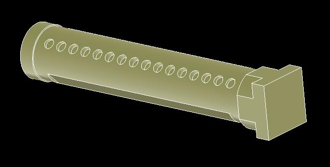
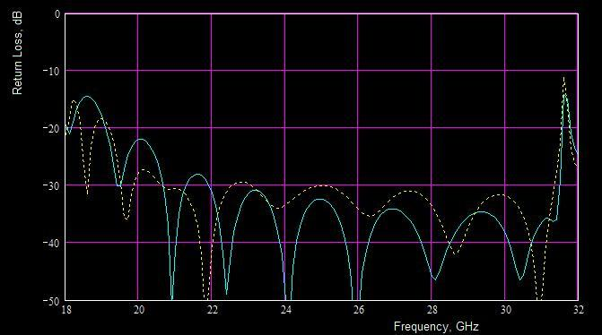

Antenna/OMT Polarizer
Polarizer is based on truncated circular waveguide
containing two rows of short circular posts.

Figure: Internal surface plot of
polarizer
Table: Performance Summary
|
Parameter |
Value |
|
BANDWIDTH,
GHz Rx Tx |
19.70-20.20 29.50-30.00 |
|
AXIAL RATIO,
dB Tx: Rx:
|
0.25 0.6 |
|
POLARIZATION POL:
Rx/Tx: Orthogonal |
Circular Orthogonal |
|
INSERTION LOSS,
dB |
0.15
zinc 0.10
aluminum |
|
PHYSICAL SIZE,
mm Length flange-to-flange
|
60 |
|
VSWR at OMT end:
|
1.17:1 (22
dB) |
|
VSWR at Feed end:
|
1.17:1 (22
dB) |
|
MATERIAL |
aluminum/zinc |

Figure 2: Frequency response (Return loss dB versus
frequency GHz) of polarizer for two orthogonal incidental
waves.